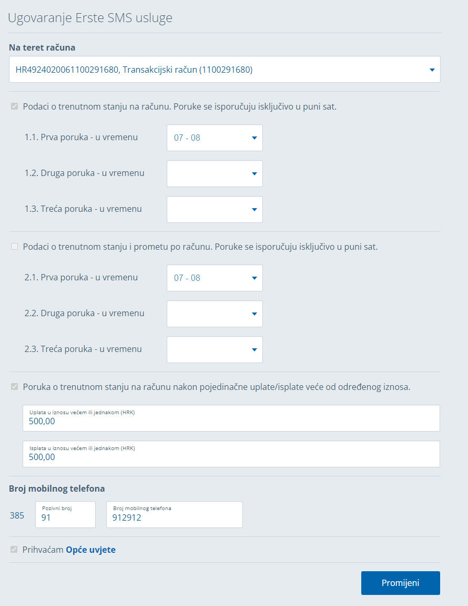

Automatizirani testovi
Mile Balenovic
Agenda
- Testiranje
- Cypress
- Cypress testovi
- Erste primjer

Alati
- Cypress
- Playwright
- Selenium
- Jest
- React-Testing-Library
- ESLint, TypeScript
- open source
- pouzdan i brz
- debugging
- dokumentacija
- setup
- video i image recording

Naredbe
cy.COMMAND
cy.visit('/home')
cy.get('h1')
cy.get('button').click()
cy.get('button').click().should('have.class', 'active')
| Selector | Recommended | Notes |
|---|---|---|
cy.get('button').click() |
Never | Worst - too generic, no context. |
cy.get('.btn.btn-large').click() |
Never | Bad. Coupled to styling. Highly subject to change. |
cy.get('#main').click() |
Sparingly | Better. But still coupled to styling or JS event listeners. |
cy.get('[name="submission"]').click() |
Sparingly | Coupled to the name attribute which has HTML semantics. |
cy.contains('Submit').click() |
Depends | Much better. But still coupled to text content that may change. |
cy.get('[data-cy="submit"]').click() |
Always | Best. Isolated from all changes. |
Chaining
cy.request('/users/1')
.its('body')
.should('deep.eql', {name: 'Marko'})
Test #1
describe('My First Test', () => {
it('clicks the link "type"', () => {
cy.visit('https://example.cypress.io')
cy.contains('type').click()
cy.url().should('include', '/commands')
})
})
AAA - arrange, act, assert
describe('My Second Test', () => {
it('User login', () => {
cy.visit('/login')
cy.get('[data-cy=username]').type('mvertus')
cy.get('[data-cy=password]').type('12345')
cy.get('[data-cy=submit_btn]').click()
cy.url().should('contain', '/login-successful')
})
})
Recap
- Pouzdanost selectora
- Chaining
- AAA - arrange, act, assert
- Cypress example
- Cypress Real World App
Programski login
it('successfully logs in programmatically', () => {
cy.intercept('GET', `${Cypress.env('apiUrl')}v1/SmsServiceOverview`).as('getSmsServices');
cy.login();
cy.visit('/usluge');
cy.wait('@getSmsServices').then(() => {
cy.contains('p', 'Ugovorene SMS usluge');
});
});
Cypress.env.json
{
"apiUrl": "https://localhost:7058/api/",
"username": "19026128854",
"password": "666666"
}
Ugovaranje Erste SMS usluge
Ugovaranje Erste SMS usluge
describe('ErsteSmsServiceActivation', () => {
it('form interaction', () => {
cy.login();
cy.intercept('GET', `${Cypress.env('apiUrl')}v1/SmsServiceRequest?accountNumber=`).as(
'getSmsServiceRequest'
);
cy.intercept('POST', `${Cypress.env('apiUrl')}v1/SmsServiceRequest/verification`).as(
'verifySmsServiceRequest'
);
cy.intercept('POST', `${Cypress.env('apiUrl')}v1/SmsServiceRequest/request`).as(
'postSmsServiceRequest'
);
cy.visit('/usluge/ugovaranje-sms-usluge');
cy.wait('@getSmsServiceRequest').then(() => {
cy.get('[data-testid=changeButton]').then(($button) => {
// check if service activated by checking button text
if ($button.text().includes('Promijeni')) {
cy.findByRole('button', { name: /promijeni/i }).click();
cy.findByText(
/podaci o trenutnom stanju na računu/i
).click();
cy.findByText(
/poruka o trenutnom stanju na računu pojedinačno/i
).click();
cy.findByRole('textbox', { name: /broj mobilnog telefona/i }).clear();
cy.findByRole('button', { name: /provjeri/i }).click();
cy.wait('@verifySmsServiceRequest').then(() => {
cy.findByRole('button', { name: /potvrdi/i }).click();
cy.wait('@postSmsServiceRequest').then(() => {
cy.findByText(/erste sms usluga je ažurirana\./i);
});
});
} else {
cy.findByText(
/podaci o trenutnom stanju na računu/i
).click();
cy.findByText(
/poruka o trenutnom stanju na računu nakon pojedinačno/i
).click();
cy.findByRole('textbox', { name: /uplata u iznosu/i }).type(
'500'
);
cy.findByRole('textbox', { name: /isplata u iznosu/i }).type(
'500'
);
cy.findByRole('textbox', { name: /broj mobilnog telefona/i }).type('91912912');
cy.findByText(/prihvaćam/i).click();
cy.findByRole('button', { name: /provjeri/i }).click();
cy.wait('@verifySmsServiceRequest').then(() => {
cy.findByRole('button', { name: /potvrdi/i }).click();
cy.wait('@postSmsServiceRequest').then(() => {
cy.findByText(/erste sms usluga je ažurirana\./i);
});
});
}
});
});
});
});
Live VDI
expect(PITANJA).to.equal(true)